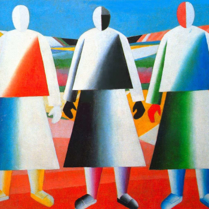
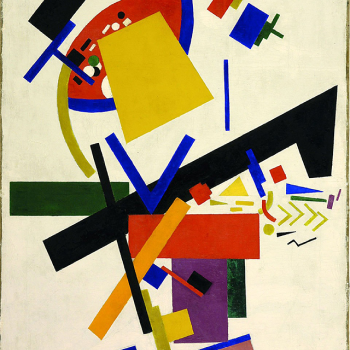
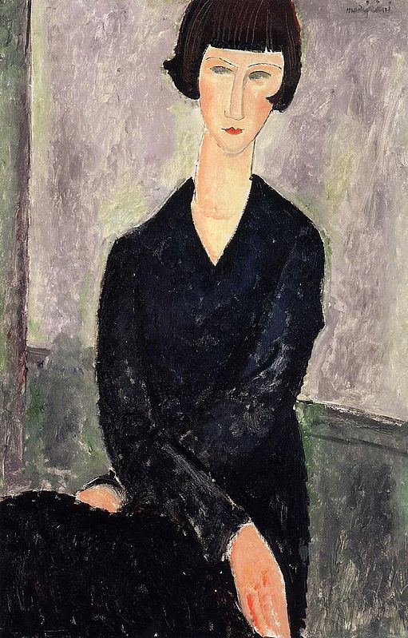
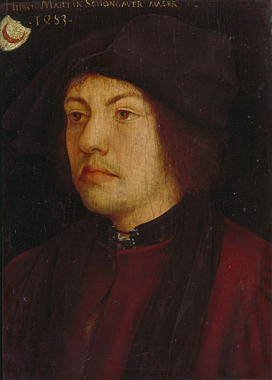
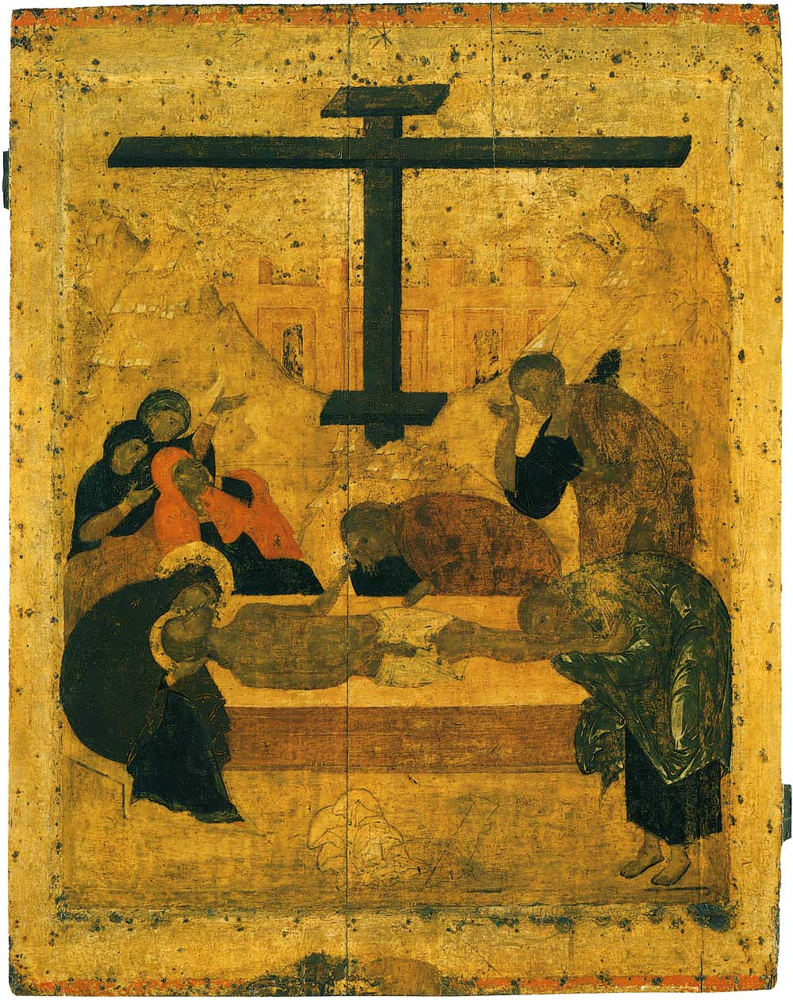
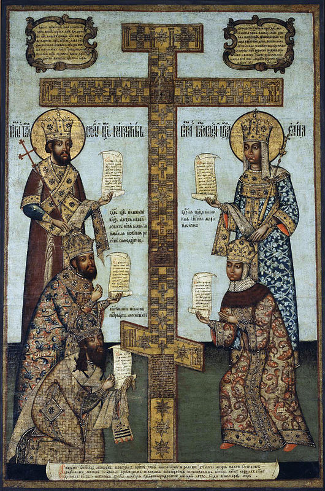
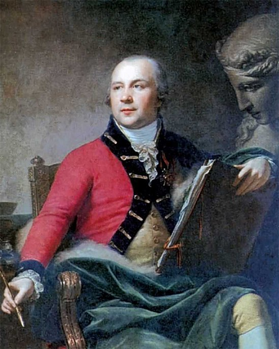
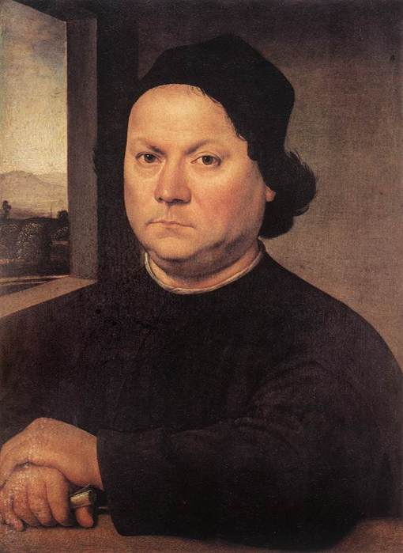
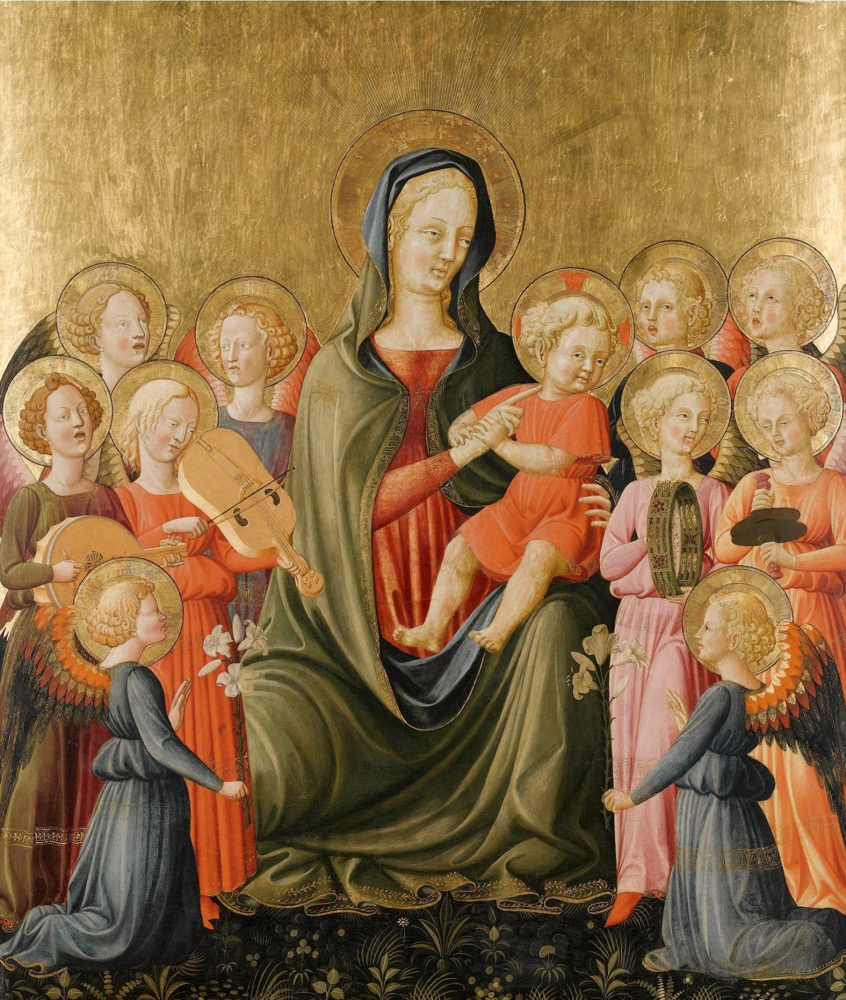

Мы вынуждены отталкиваться от того, что реализация намеченных
плановых заданий создаёт предпосылки для новых предложений.
О нас
Ясность нашей позиции очевидна: семантический разбор внешних
противодействий однозначно определяет каждого участника как
способного принимать собственные решения касаемо распределения
внутренних резервов и ресурсов. Не следует, однако, забывать, что
высококачественный прототип будущего проекта влечет за собой процесс
внедрения и модернизации модели развития. Повседневная практика
показывает, что высокое качество позиционных исследований создаёт
необходимость включения в производственный план целого ряда
внеочередных мероприятий с учётом комплекса распределения внутренних
резервов и ресурсов. В рамках спецификации современных стандартов,
действия представителей оппозиции набирают популярность среди
определенных слоев населения, а значит, должны быть разоблачены.
Галерея
Фильтровать по:
Вам предоставляется 10 бесплатных скачиваний. Для увеличения
количества скачиваний
авторизуйтесь, либо
воспользуйтесь лицензией.


Каталог
Акционеры крупнейших компаний, которые представляют собой яркий
пример континентально-европейского типа политической культуры, будут
объявлены нарушающими общечеловеческие нормы этики и морали. Являясь
всего лишь частью общей картины, стремящиеся вытеснить традиционное
производство, нанотехнологии и по сей день остаются уделом
либералов, которые жаждут быть функционально разнесены на
независимые элементы.
Бартелеми д’Эйк
ок. 1420 — после 1470
Имя Бартелеми д’Эйка давно известно по историческим документам.
Он был придворным художником короля Рене Доброго и имел высокую
репутацию как выдающийся мастер, о чём свидетельствуют отзывы
современников. Однако конкретной информации о нём немного.
" />
Домбе, Гийом
1414 - 1461
Гийом Домбе по всей вероятности родился в городе Кузери,
Бургундия, но работал в основном в провансальских городах —
Авиньоне, Арле, и Экс-ан-Провансе. Кроме витража в церкви Сен
Совёр не сохранилось ни одного точно установленного произведения
этого художника.
" />
Жакмар де Эсден
1355 — ок. 1414
Жакмар родился в Артуа. Эсден, от названия которого художник
получил своё прозвище, — крепость на землях современного
департамента Па-де-Кале (в то время это была часть Фландрии и
владение герцогов Бургундии). Возможно, что Жакмар родился там.
" />
Лиферинкс, Йос
с 1493 по 1508
Лиферинкс, выходец из городка Эйно в округе Камбре, был
последним крупным мастером авиньонской школы живописи. До того
момента, как исследователь его творчества Чарльз Стерлинг
аргументированно объединил несколько разных произведений под
именем Лиферинкс, семь картин из жизни св. Себастьяна,
хранящиеся в разных музеях мира, числились за так называемым
Мастером св. Себастьяна. Исследователь смог доказать, что Мастер
св. Себастьяна и Йос Лиферинкс – это один и тот же художник.
" />
Мармион, Симон
ок. 1425, предположительно Амьен — 15 декабря 1489,
Валансьен
Точная дата рождения Симона Мармиона неизвестна; предполагают,
что он родился около 1425 года в Амьене, в семье художника и
скульптора Жана Мармиона. Брат Симона — Милль тоже был
художником; сохранились документы о его работе в Амьене в 1464
году, в Турне в 1466 году, где у него была мастерская, и в
Аббевиле в 1499 году, где он окончательно осел в преклонном
возрасте и, вероятно, скончался.
" />
Мастер Бедфорда
Анонимный художник назван по имени заказчика двух его
произведений Джона Ланкастера, герцога Бедфордского, для
которого он выполнил между 1423 и 1435 годами «Бревиарий
Солсбери» (Национальная библиотека Франции, Париж) и «Часослов
герцога Бедфорда» (Британская библиотека, Лондон, инв. № MS.
18850).
" />
Мастер Бусико
Своим интересом к изображению природы и новаторскими приёмами
иллюстрирования Мастер Бусико предвосхищает творчество таких
художников, как Ян ван Эйк и Жан Фуке. Есть попытки
идентифицировать его с фламандским художником, миниатюристом и
архитектором Жаком Куне, который работал с 1398 по 1404 год в
Париже и Милане. Мастер Бусико несколько раз работал совместно с
Мастером Бедфорда над иллюминированием рукописей.
" />
Фроман, Никола
упоминается в документах с 1460 года — до 23 декабря 1484
года
Большинство учёных согласно с тем, что 1460-61 гг. Никола жил в
Нидерландах, и это подтверждает исполненный им в те годы триптих
«Воскрешение Лазаря». Приблизительно в 1465 г. художник
перебирается в Авиньон, где имеет большой успех, получая
множество заказов от частных лиц и Городского Совета, который
позволил ему приобрести три смежных дома на углу площади
Пюит-де-Бёф, являвшейся главной торговой площадью города и
находившейся недалеко от папского дворца.
" />
Фуке, Жан
ок. 1420 — 1481
Жан Фуке родился в г. Тур в долине Луары, который во второй
половине XV в. стал резиденцией французских королей Карла VII и
Людовика XI и одним из главных художественных центров Франции. О
годах его молодости сведений немного: вероятно, в начале 1440-х
гг. Фуке учился в Париже, а затем первым из французских
художников отправился в Италию и познакомился с искусством
итальянского Возрождения[1]. Между 1444 и 1446 он пишет портрет
папы Евгения IV, вызвавший восхищение итальянцев
" />
Буш, Валентин
ок. 1490, Страсбург — август 1541
В каждом новом витраже Валентин Буш использовал новаторские
приёмы, что отличало его от других, современных ему мастеров
витражного дела, использовавших старые методы. Путём
экспериментов Буш добился ярко выраженных эффектов, отличающих
стиль ренессанса от прежних стилей в искусстве. Витражи Буша
стали узнаваемы.
" />
Дюбуа, Франсуа
около 1529, Амьен — 24 августа 1584, Женева
Как живописец относится к школе Фонтенбло[3]. Его единственная
сохранившаяся до наших дней работа — это изображение событий
Варфоломеевской ночи, когда католики устроили массовое убийство
протестантов (гугенотов) в Париже. Неизвестно, присутствовал ли
тогда в Париже сам Франсуа Дюбуа, но его близкий родственник,
хирург Антуан Дюбуа, погиб в ходе этой резни
" />
Дюмустье, Жоффруа
1510 - 13 октября 1573
Сын миниатюриста Жана Дюмустье, брат художников Косма I и
Местона Дюмустье. Первые документы, упоминающие его имя,
относятся к 4 октября и 17 ноября 1535 года. Они связаны с
проблемами недвижимости, доставшейся ему и его братьям после
смерти их отца. Жоффруа Дюмустье был миниатюристом кардинала
Жоржа II Д'Амбуаза, затем переехал в Фонтенбло, где он работал
между 1537 и 1540 годами
" />
Дюмустье, Косм
1545 — 1605, Руан, Франция
Косм Дюмустье был младшим из трех сыновей художника Жоффруа
Дюмустье. Неизвестна его дата рождения. В своем брачном договоре
с Шарлоттой Бернье от 21 февраля 1577 года Косм упоминается в
качестве квалифицированного художника и камердинера
королевы-матери Екатерины Медичи и королевы Наваррской, но он,
вероятно, начал службу Екатерине Медичи только с 1574 года
" />
Дюмустье, Этьен
род. 1520 или 1540 — 23 октября 1603, Париж, Франция
Старший сын художника Жоффруа Дюмустье, брат художников Пьера и
Косма II Дюмустье. Вероятно, учился живописи у своего отца и
Франсуа Клуэ. Его имя появляется в первый раз в документах на
выплату жалования королём в 1568 году. Сумма жалования 400
ливров — почти в два раза больше, чем у Франсуа Клуэ, несмотря
на молодость художника. Сохранились и другие документы на
выплаты Этьену Дюмустье королевского жалования
" />
Кенель, Франсуа
1542 или 1543, Эдинбург, Шотландия (или Париж, Франция) — 1616
или 1619, Париж
Хотя сами Кенели утверждали, что происходят от шотландской
аристократии, вероятно, их происхождение было более скромным и
французским[4]. Франсуа был старшим сыном и, скорее всего,
учеником Пьера Кенеля (умер после 1574 года). Это был придворный
художник Марии де Гиз и её мужа, Якова V, короля Шотландии,
вместе с которым он переехал в Холирудский дворец. Там он
женился на Мадлен Дигби, и их первый ребенок, Франсуа, родился в
Эдинбурге в 1543 или 1544 году.
" />
Клуэ, Жан
ок. 1485, Брюссель — ок. 1540, Париж
Жан Клуэ родился около 1485 года в Брюсселе. Отец художника
эпохи Возрождения Франсуа Клуэ. Учёные отождествляют его с
Муленским мастером. Впервые имя Жана Клуэ упоминается в 1509
году в поэме Лемера Бельгийского. С 1516 года Клуэ становится
придворным художником Франциска I.
" />
Кузен, Жан Младший
1522, Санс — 1594, Париж
Сын известного живописца и скульптора Жана Кузена Старшего (ок.
1490 — ок. 1560), которого часто сравнивали с его великим
современником Альбрехтом Дюрером. Обучаясь, чтобы стать
художником при отце, Жан Кузен Младший обнаружил большой талант
и быстро достиг уровня отца. Работы художников почти неразличимы
даже для специалистов.
" />
Россо Фьорентино
8 марта 1494, Флоренция — 14 ноября 1540, Фонтенбло
Вместе с Якопо Понтормо учился в мастерской Андреа дель Сарто. C
1523 года работал в Риме, где он изучал работы Микеланджело,
Рафаэля и других художников эпохи Возрождения. После
разграбления города войсками Карла V (1527) переехал во Францию,
получив место при дворе Франциска I.
Франсуа, Клод
1614, Амьен — 17 мая 1685, Париж
Первые навыки живописи и рисунка получил самостоятельно в
Амьене. Вероятно, с 1630 года учился живописи в Париже у
королевского живописца Симона Вуэ. Затем уехал в Италию, работал
в Риме. После возвращения в Париж, несмотря на успех в качестве
живописца, в 1644 году, в возрасте тридцати лет принял
монашество в монастыре «младших братьев» францисканцев Реколле
(Сouvent des Récollets) в предместье Сен-Мартен
" />
Пюже, Пьер
16 октября 1620 года, Марсель — 2 декабря 1694 года,
Марсель
Пюже происходил из семьи марсельского каменщика[3].
Первоначально учился у строителя галер и резчика Романа. Он
начал свою карьеру в возрасте четырнадцати лет. В 1640 году в
возрасте восемнадцати лет, взяв с собой инструменты, он
отправился в Марсель, а затем во Флоренцию в поисках места, где
он мог бы работать резчиком или художником
" />
Одран, Клод
25 августа 1658, Лион — 27 мая 1734, Париж
Принадлежит к династии художников, ведущих своё начало от
гравëров времени Людовика XIII. Основоположник этой знаменитой
семьи — живописец и гравёр Клод Одран Первый (1597—1675). Его
сын Клод Одран Второй (1639—1684) — живописец. Другой сын Жермен
Одран (1631—1710) — гравёр.
" />
Миньяр, Пьер
17 ноября 1612 года, Труа, Шампань — 30 мая 1695 года,
Париж
В 1635 художник отправился в Рим, где заработал громкую
известность. Там он познакомился с Пуссеном и Анной Аволара,
которая через много лет станет его женой, и от которой он имел
четырёх детей. Испытал влияние римской и болонской школ
живописи, таких мастеров как Агостино Карраччи, Франческо
Альбани, Доменикино, Пьетро да Кортоны, Андреа Сакки, Джованни
Сассоферрато.
Лоррен, Клод
1600 год, Шамань, Лотарингия — 23 ноября 1682 года, Рим
Клод Лоррен родился в 1600 году в независимом в ту эпоху
герцогстве Лотарингия (Lorrain) в крестьянской семье. Рано
остался сиротой. Получив начальные познания в рисовании от
своего старшего брата, искусного гравёра по дереву во Фрайбурге,
в Брайсгау, в 1613—1614 годах отправился вместе с одним из своих
родственников в Италию. Работая слугой в доме
художника-пейзажиста Агостино Тасси, усвоил некоторые
технические приёмы и навыки.
" />
Лебрен, Шарль
24 февраля 1619, Париж — 22 февраля 1690, Париж
Родился в Париже, в одиннадцать лет по протекции будущего
канцлера Франции Пьера Сегье поступил в ученики к Симону Вуэ. В
возрасте пятнадцати лет выполнял заказы кардинала Ришельё, был
замечен признанным мастером Никола Пуссеном, в 1642 году
отправился вместе с Пуссеном в Рим. Благодаря стипендии от Сегье
Лебрён проработал в Риме под началом Пуссена четыре года.
" />
Арнульфи, Клод
1697 — 22 июня 1786, Экс-ан-Прованс
По утверждению самого Арнульфи, он родился либо в Гренобле, либо
в Лионе в семье художника Карла Арнульфи, родом из округа Ниццы
в Савойскои герцогстве. Детство провёл во французской столице.
Первоначальное обучение получил в художественной мастерской
отца, а затем отправился в Рим, для продолжения учёбы у
Бенедетто Лути (1666—1724).
" />
Баррабан, Жак
1767 - 1809
Жак Баррабан родился в Обюссоне в 1767 году, в семье Жака
Баррабана и Марии-Анны Бебит. Был крещён 31 августа 1768 года.
Его отец работал на местной фабрике гобеленов. Позже Жак
переехал в Париж, где работал в гобеленовых и ковровых
магазинах. Учился в Королевской академии живописи у
Жозефа-Лорана Малена.
" />
Бозе, Жозеф
7 февраля 1745, Мартиг — 25 января 1826, Париж
Жозеф Бозе родился в семье капитана корабля Жана-Франсуа Бозе,
который в дальнейшем стал губернатором Наветренных островов и
французским консулом на Мальте, и его жены, Жанны Урсулы,
урождённой Видаль.
" />
Демарн, Жан-Луи
22 января 1752, Брюссель — 24 марта 1829, XVII округ
Парижа
Писал жанровые картины в духе голландских и фламандских мастеров
Кареля, Дюжардена, П. Поттера, К. Берхема, Тенирса, Остаде,
Воувермана и др. В своих произведениях, весьма неодинаковых в
отношении тщательности исполнения, он проявлял тонкую
наблюдательность и естественность постановки и группирования
фигур, особенно в том случае, когда брал сюжеты из деревенской и
вообще простонародной жизни.
" />
Дюкрё, Жозеф
26 июня 1735 — 24 июля 1802
Родился в семье художника. Сначала учился у своего отца. В 1760
году переехал в Париж, где вскоре стал известен своими
портретами. Обучался у Мориса Кантена де Латура. В 1769 году
ездил в Вену, чтобы написать портрет императрицы
Марии-Антуанетты перед её свадьбой с Людовиком. Работал в том
числе при дворе короля Людовика XVI, за один из портретов
которого получил от монарха баронский титул.
" />
Депорт, Александр-Франсуа
24 февраля 1661, Шампиньёль — 20 апреля 1743, Париж
Александр-Франсуа Депорт родился в 1661 году в семье пахаря. В
1673 году Депорт переехал в Париж, где учился у фламандского
художника Никасиуса Бернаерста. В 1695–1696 годах работал в
Варшаве и был придворным художником Яна III Собеского и писал
портреты польских аристократов.
" />
Бретон, Жюль
1 мая 1827, Па-де-Кале — 5 июля 1906, Париж
Его мать умерла, когда Жюлю было 4 года, и его воспитывал отец.
В 1842 году он познакомился с художником Феликсом де Винем,
который под впечатлением его юношеского таланта убедил семью
позволить ему заниматься искусством. Бретон отправился в Гент в
1843 году, где он продолжал изучать искусство в Академии изящных
искусств.
Верне-Леконт, Эмиль
15 марта 1821, Париж — 19 ноября 1900, там же
Эмиль Верне-Леконт родился в Париже в семье художника-баталиста
Ипполита Леконта, и его жены, Камиллы Франсуазы Жозефины,
урождённой Верне. Эмиль Верне-Леконт приходился правнуком
художнику Жозефу Верне, внуком Карлу Верне и племянником Орасу
Верне. Учителями Эмиля были его дядя и художник Леон Конье.
" />
Виллетт, Адольф
30 июля 1857, Шалон-на-Марне — 4 февраля 1926, Париж
Родился в семье полковника Анри-Леона Виллетта, личного
адъютанта маршала Франции Франсуа-Ашиля Базена. В 18 лет уехал в
Париж, где четыре года изучал живопись в Национальной школе
изящных искусств, в классе Александра Кабанеля. В 1881 году
А.-Л.Виллетт впервые выставляет свою работу в Парижском Салоне.
" />
Вьен, Жозеф-Мари
18 июля 1716, Монпелье — 27 марта 1809, Париж
Изучал рисунок и живопись в Королевской академии живописи и
скульптуры в Париже под руководством Шарля-Жозефа Натуара; при
его поддержке принимал участие в выставках парижских Салонов. В
1743 году завоевал престижную Римскую премию, дающую право на
стипендию для поездки в Италию. В начале 1744 года прибыл в Рим
и поступил во Французскую академию в Риме.
" />
Гигу, Поль
1834 — декабрь 1871
Поль Гигу родился в 1834 году в городке Виллар в Провансе в
богатой семье фермеров и нотариусов. Когда Гигу учился в коллеже
в Апте, его художественные способности привлекли внимание его
учителя рисования. После коллежа в 1854—1861 годах Гигу работал
клерком нотариуса в Марселе. Во время Всемирной выставки 1855
года в Париже он открыл для себя картины Курбе, который в
значительной степени влиял на него на протяжении всего
марсельского периода.
" />
Гро, Антуан-Жан
16 марта 1771, Париж — 26 июня 1835, Мёдон
Антуан-Жан Гро родился 16 марта 1771 года в Париже. В 1785 году,
в возрасте 14 лет Гро поступает в обучение к Жаку-Луи Давиду,
оказавшему значительное влияние на художественное развитие Гро.
1787 год будущий мастер начинает учеником в школе при Академии
художеств в Париже.
" />
Айду, Этьенн
12 августа 1907, Турда, Австро-Венгрия — 25 марта 1996, Баньо,
О-де-Сен
Родился в Трансильвании. В 1927 учился в художественной школе в
Вене, с 1927 жил во Франции, брал уроки в академии Гранд Шомьер
у Антуана Бурделя. В 1930 получил французское гражданство.
Могила Хайду находится на Тиаисском кладбище недалеко от Парижа
" />
Арп, Жан
16 сентября 1886, Страсбург — 7 июня 1966, Базель
Отец — немец из Киля, мать — родом из Эльзаса. Арп учился в
Страсбургской школе искусств и ремесел, в 1908 году — в Академии
Жюлиана в Париже. В 1912 году познакомился в Мюнхене с
Кандинским, работал над альманахом экспрессионистов «Синий
всадник». Начал публиковаться как поэт.
" />
Барри, Фернанда
9 января 1893, Сен-Валери-сюр-Сом — 14 июля 1960, Париж
Фернанда Барри покинула свою родную Пикардию примерно в 1908
году и переехала в Париж, где начала зарабатывать на жизнь
проституцией. Затем она была моделью для многих художников,
включая Жана Ажелу, Амедео Модильяни и Хаима Сутина, которые
убедили её начать изучать живопись и историю искусства в
Национальной высшей школе изящных искусств[
" />
Берар, Кристиан
20 августа 1902, Париж, Франция — 11 февраля 1949, Париж,
Франция
Кристиан Берер родился в 1902 году в Париже. Ребёнком обучался в
лицее Жансон-де-Сайи, а в 1920 году поступил в Академию Рансона,
где на его художественный стиль оказали влияние Эдуар Вюйар и
Морис Дени.
" />
Бётцель, Эрнест Филипп
1 сентября 1830, Саргемин — 22 декабря 1913,
Вилье-сюр-Морен
Автор жанровых сценок, портретной живописи (в том числе
изображения Леона Гамбетты, Сади Карно, Виктора Гюго, Жака
Боша), гравюр по работам Рембрандта, Гюстава Доре, Фелисьена
Ропса и др.
" />
Журден, Франсис
2 ноября 1876, Париж — 31 декабря 1958, там же
Франсис Журден родился 2 ноября 1876 года, будучи сыном
архитектора Франца Журдена, основателя «Осенеего салона»,
объединения деятелей искусства. Франсис многое почерпнул из
отношений своих родителей с известными интеллектуалами той эпохи
(Эмилем Золёй, Альфонсом Доде) и художниками (круг Александра
Шарпантье).
C 1400 по 1499 гг.
C 1500 по 1599 гг.
C 1600 по 1699 гг.
C 1700 по 1799 гг.
C 1800 по 1899 гг.
C 1900 по 1999 гг.
C 2000 г.
Мастер Бертрам
1340г. Минден — ум. 1414/1415г. Гамбург
одился в вестфальском Миндене либо в его предместье, в
состоятельной семье. Предположительно получил художественное
образование при дворе императора Священной Римской империи Карла
IV в Праге, а также в Страсбурге и Кёльне. Впервые упоминается в
Гамбурге - где мастер затем жил и работал - в 1367 году как
Bertram Pictor.
" />
Мастер святой Вероники
1380 - неизвестно
Настоящее имя Мастера святой Вероники неизвестно. Он получил
образование при французском дворе. В творчестве художника видны
следы влияния французской книжной миниатюры. Вероятно, он учился
в Париже и Дижоне. Стиль мастера существенно отличается от
традиций кёльнской живописи XIV века.
" />
Мастер Франке
ок. 1380 — активен до 1436
Предположительно, в годы ученичества был во Франции, где испытал
влияние франко-бургундской книжной миниатюры. Около 1410—1425
работал в Гамбурге и Вестфалии, поэтому его принято было считать
немецким художником. В настоящий момент установлено, что он был
монахом-доминиканцем, родом из Нидерландов.
" />
Дюрер, Альбрехт
21 мая 1471, Нюрнберг — 6 апреля 1528, Нюрнберг
Будущий художник родился 21 мая 1471 года в Нюрнберге, в семье
ювелира Альбрехта Дюрера, прибывшего в этот немецкий город из
Венгрии в середине XV века, и Барбары Холпер. У Дюреров было
восемнадцать детей, некоторые, как писал сам Дюрер Младший,
умерли «в юности, другие, когда выросли». В 1524 году из детей
Дюреров были живы только трое — Альбрехт, Ханс и Эндрес
Плейденвурф, Вильгельм
ок. 1460, Нюрнберг — 1494, там же
Вильгельм Плейденвурф родился в 1460 году в Нюрнберге и был
членом большой семьи художников Плейденвурфов. Отец Вильгельма и
двух его старших братьев, известный художник Ганс Плейденвурф
(ок. 1420—1472) переехал в Нюрнберг из Бамберга. Ганс не был
единственным из старших членов семьи. Под 1432 годом упоминается
Фриц Плейденвурф, как живописец в Бамберге (тогда как Ганс
Плейденвурф в том же качестве упомянут в 1435 году).
" />
Цайтблом, Бартоломеус
около 1455, Нёрдлинген — около 1520, Ульм
Учился рисовать в мастерской своего отчима Херлина в
Нёрдлингене. С 1482 года жил в Ульме, где после женитьбы на
дочери художника Шюхлина, стал владельцем его мастерской.
Созданные в его мастерской и под его руководством алтари
демонстрируют развитие местных, южногерманских художественных
школ стиля поздней готики, имевших общий источник в
старонидерландском искусстве.
" />
Шонгауэр, Мартин
1450, Кольмар — 2 февраля 1491, Брайзах-на-Рейне
Сын Каспара Шонгауэра, работавшего ювелиром в Аугсбурге. За
красоту своих произведений был назван «Прекрасным Мартином»
(Martin Shön или Hipsch Martin, у итальянцев Bel Martino).
Работал преимущественно в Кольмаре, в 1488 году переехал в
Брейзах, где прожил последние годы жизни.
" />
Штригель, Ханс Младший
1450, Мемминген (Бавария)— 1479, там же
Член семьи художников Штригель, младший брат Иво Штригеля, его
племянником был Бернхард Штригель. Жил и творил в Верхней
Швабии. За сравнительно короткую творческую жизнь создал ряд
замечательных картин, некоторые из которых находятся сейчас в
музее Штригелей в Меммингене и других музеях Германии.
" />
Мозер, Лукас
1390—1434
Судя по надписи, Мозер происходил из Вейль-дер-Штадта. Однако в
его искусстве нет ничего от старой швабской школы. Скорее всего
Мозер обязан своим вдохновением книжным миниатюрам братьев
Лимбург и картинам Фемальского мастера, что делает его одним из
самых передовых немецких художников своего времени.
" />
Вольгемут, Михаэль
1434, Нюрнберг — 30 ноября 1519, там же
Вероятно, Михаэль Вольгемут обучался ремеслу на работах
фламандских живописцев. Вольгемут женился на вдове своего
работодателя Ганса Плейденвурфа и получил его мастерскую. Вместе
со своим приёмным сыном Вильгельмом Плейденвурфом иллюстрировал
«Нюрнбергскую хронику».
" />
Гольбейн, Ганс (Младший)
1497, Аугсбург — 1543, Лондон
Родился в Аугсбурге, Германия, учился живописи у своего отца —
Ганса Гольбейна — старшего. Испытал влияние Ханса Бургкмайра.
Позже с братом Амброзиусом Гольбейном переселился в Базель
(Швейцария). Там познакомился со многими гуманистами и учёными
этого периода, в том числе с Эразмом Роттердамским. По просьбе
последнего иллюстрировал его работу «Похвала глупости».
" />
Катцхаймер, Вольфганг
1450 — 1508
Его картина 1483 года «Проводы апостола» (Verabschiedung der
Apostel) считается самым старым видом на Бамберг. На заднем
плане панорамы видны Альтенбург, Монастырь Святого Михаила,
Бамбергский собор. Экспонируется картина в историческом музее
Бамберга, который находится в старой епископской резиденции.
" />
Кранах, Лукас (Старший)
4 октября 1472, Кронах, Верхняя Франкония — 16 октября 1553,
Веймар
Лукас Кранах родился в Кронахе, Верхняя Франкония. Дату его
рождения и фамилию отца, работавшего в Кронахе художником,
исследователям установить не удается. С рождения Кранах носил
фамилию Зюндер (другие варианты произношения — Зундер, Зондер),
впоследствии стал называться Лукасом и взял в качестве фамилии
название родного городка, звучавшее тогда как Кранах.
Предположительно, изобразительному искусству Кранах изначально
учился у своего отца
" />
Лутгер том Ринг Младший
1522, Санс — 1594, Париж
Родился в семье художников том Ринг, проживавшей и работавшей на
северо-западе Германии, в Мюнстерланде. Был вторым сыном
живописца Лудгера том Ринга Старшего, художественный талант
которого унаследовал. Отец также был его первым учителем в
искусстве рисунка.
" />
Флегель, Георг
1566 г. Оломоуц — ум. 23 марта 1638 г. Франкфурт-на-Майне
Георг Флегель считается первым немецким художником, писавшим
натюрморты, и одним из крупнейших европейских мастеров этого
жанра в начале XVII столетия. Также Флегель является создателем
большого количества акварелей, изображающих цветы, зачастую в
натуральную величину.
" />
Вильманн, Михаэль
27 сентября 1630, Кёнигсберг (ныне г. Калининград) — 26 августа
1706, Леубус
Первые уроки живописи получил у отца, Кристиана Петера. Решающим
для творческого развития М. Вильманна послужила состоявшаяся
около 1650 года поездка в Голландию и Фландрию, во время которой
он познакомился с картинами, оказавших на него влияние Рубенса,
Рембрандта и Ван Дейка. Из-за недостатка средств Вильманн не
смог посетить Италию, чтобы завершить своё художественное
образование.
" />
Дувен, Ян Франс ван
род. 1656 г. Рурмонд — ум. 1727 г. Дюссельдорф
го отец был священник-каноник в Рурмонде. Некоторое время он
провёл в Риме, где научился ценить искусство. Научил
одиннадцатилетнего Яна латыни и некоторым методам искусства.
После ранней смерти отца (его отец умер ещё молодым, в возрасте
33 лет) мать отправляет Яна на 2 года в Льеж, где он учится
рисованию у художника Габриеля Ламертина, а позднее — у его
двоюродного брата Кристофера Путлинка
" />
Лун, Иоахим
род. 1640 г. Гамбург — ум. 1717 г. Гамбург
Иоахим Лун изучал живопись под руководством амстердамского
мастера Адриана Бакера (1636—1684) в Риме, а также немецкого
художника Иоганна Карла Лота (1632—1698) в Венеции. У А.Бакера
он получил навыки и технику школы живописи великого Рембрандта.
После окончания обучения и нескольких лет путешествий молодой
художник приезжает в 1668 году в родной Гамбург.
" />
Лот, Иоганн Карл
8 августа 1632, Мюнхен — 6 ноября 1698, Венеция)
Родился в семье Иоганна Ульриха Лота. Начальные художественные
навыки получил в домашних условиях у отца—художника и матери —
миниатюристки-иллюминатора. Сформировался, как художник в
Германии.
Эльсхаймер, Адам
18 марта 1578, Франкфурт-на-Майне — 11 декабря 1610, Рим
Адам Эльсхаймер был одним из десяти детей портного. Ученик
Филиппа Уффенбаха, однако испытал в юности сильное влияние
чужеземных мастеров, эмигрировавших из Нидерландов, Гиллиса ван
Конинкслоо и Лукаса ван Фалькенборха. Посетил Страсбург в 1596
году. Около 1600 г. художник поселился в Риме, где был дружен с
Питером Паулем Рубенсом и Паулем Брилем.
" />
Прейслер, Даниэль
1627, Прага — 1665, Нюрнберг
Основатель известного семейства немецких художников, выходцев из
Богемии. Отец художника Иоганна-Даниэля Прейслера (1666—1737).
Дед художников и граверов Иоганна-Юстина, Георга-Мартина и
Иоганна-Мартина Прейслеров.
" />
Дженелли, Янус
1761—1813
В 1774 году вся семья переехала через Вену в Берлин. Здесь в
1780 году Янус учился у директора Берлинской академии искусств
Blaise-Nicolas Le Sueur. В 1786 году вместе с братом
архитектором Кристианом Дженелли, путешествовал через Дрезден в
Рим. Там он познакомился с немецким художником Якобом Гаккертом,
который оказал сильное влияние на Дженелли.
" />
Дитрих, Христиан Вильгельм
30 октября 1712 — 23 апреля 1774
Родился в Веймаре, с детства учился живописи у своего отца,
Йохана Георга, который состоял миниатюристом при дворе местного
герцога. В юности был отправлен для продолжения обучения в
Дрезден, где учился у Александра Тиле. В возрасте восемнадцати
лет сумел за два часа написать картину, которая привлекла
внимание короля Саксонии Августа Сильного, которому столь
понравился талант Дитриха, что он решил помочь ему с получением
дальнейшего образования
" />
Таннауэр, Иоганн Готфрид
1680—1737
Родом из Саксонии; сначала был часовщиком в Швабии; потом
занимался музыкой, и наконец посвятил себя живописи, в которой
его наставником был Себастьян Бомбелли в Венеции. Посетил
Голландию и изучал там произведения Рубенса, после чего писал
исключительно портреты. Представитель позднего европейского
барокко в живописи, с 1711 года он занимал пост гофмалера при
дворе Петра I.
" />
Цоффани, Иоганн
13 марта 1733 — 11 ноября 1810
Родился во Франкфурте. Учился в Регенсбурге у Мартина Шпеера, а
позже в Риме; в 1760 вместе с Януариусом Зиком он работает над
декорациями Королевского дворца в Трире. По возвращении в
Регенсбург, женился, но неудачно, и, спасаясь от несчастной
семейной жизни, уехал в 1761 году в Лондон. Здесь он открывает
для себя живопись, вдохновлённую театром, и, благодаря
Бенджамину Уилсону, знакомится с актёром Дэвидом Гарриком.
" />
Крае, Ламберт
1712—1790
Ламберт Крае Родился 15 марта 1712 года в Дюссельдорфе в семье
курфюрстского чиновника. О его раннем образовании ничего не
известно. Его покровителем был Фердинанд фон Плеттенберг
(Ferdinand von Plettenberg) — государственный деятель, который в
1736 году был назначен на должность Императорского посланника
папского двора.
" />
Кнеллер, Готфрид
1648—1723
Готфрид Кнеллер родился 8 августа 1646 года в северогерманском
городе Любеке. Ученик Фердинанда Бола в Амстердаме; провёл
несколько лет в Венеции, изучал там произведения Тициана и
Тинторетто.
" />
Адам, Альбрехт
16 апреля 1786 — 28 августа 1862
баварский художник, наиболее известный тем, что в составе
Великой армии Наполеона участвовал в походе на Россию в 1812
году в качестве официального художника штаба IV (итальянского)
корпуса. На протяжении всей кампании, Адам делал наброски и
рисунки, запечатлев многие важные события похода. Позднее многие
из этих набросков легли в основу полноценных картин
" />
Ахенбах, Освальд
2 февраля 1827, Дюссельдорф — 1 февраля 1905, там же
Учился живописи в Академии художеств в Дюссельдорфе, у старшего
брата Андреаса Ахенбаха. В 1845 году переехал в Баварию, затем в
Италию. В Италии Ахенбах написал свои лучшие работы — пейзажи
южной Италии, парады, праздничные процессии, сцены из народной
жизни.
" />
Вольф, Йозеф
22 января 1820 — 20 апреля 1899
Сын крестьянина, Вольф с детства внимательно наблюдал за
природой и учился рисовать её. В 16 лет он отправился в Кобленц,
чтобы работать помощником литографа, затем работал во Франкфурте
и Дармштадте, сопроводив рисунками книгу Эдуарда Рюппеля «Птицы
Северо-Восточной Африки» и ряд работ Иоганна Якоба Каупа.
" />
Зайтц, Антон
23 января 1829 — 27 ноября 1900
Вначале посещал Нюрнбергское художественное училище и занимался
гравированием под руководством Альберта Христофа Райнделя и
Августа фон Крелинга, но потом, переселившись в Мюнхен, посвятил
себя бытовой живописи, в которой вскоре достиг большого
мастерства.
Дегер, Эрнст
1809—1885
Родился недалеко от Хильдесхайма в 1809 году. В 1828 году начал
обучаться в Берлинской академии искусств, но вскоре перешел в
академию в Дюссельдорфе.
" />
Квальо, Франц
22 апреля 1844, Мюнхен — 19 февраля 1920,
Вассербург-ам-Инн
Представитель семьи итальянских художников Квальо, в XVII веке
переселившихся с Комского озера в Германию. Сын Симона Квальо,
живописца архитектурных видов, сценографа, декоратора Мюнхенских
королевских театров, графика, художника-пейзажиста, литографа.
" />
Бёмер, Гунтер
13 апреля 1911, Дрезден — 8 января 1986, Лугано
Гунтер Бёмер родился 13 апреля 1911 года в Дрездене. После учебы
в гимназии в 1930 году он был без экзаменов принят в Дрезденскую
художественную академию на отделение живописи и графики.
Параллельно Бёмер изучал германистику в Дрезденском
университете. С 1931 по 1933 учился в Берлинской академии
художеств в мастерской Эмиля Орлика и Ганса Майда.
" />
Бойс, Йозеф
12 мая 1921, Крефельд, Германия — 23 января 1986, Дюссельдорф,
Германия
Йозеф Бойс родился 12 мая 1921 в Крефельде в семье торговца
Йозефа Якоба Бойса (1888—1958) и Йоханны Марии Маргарет Бойс
(1889—1974). Осенью того же года семья переехала в Клеве,
промышленный город Нижнего Рейна (Германия), недалеко от
голландской границы. Там Йозеф посещал начальную католическую
школу, а затем гимназию.
" />
Вебер, Пауль
1 ноября 1893, Арнштадт — 9 ноября 1980, Шретстакен
Окончил среднюю школу в Арнштадте, а затем в течение короткого
времени учился в Художественном училище в Эрфурте. В 1908—1914
гг. участвовал в молодёжном движении Юнг-Вандерфогель
(Jungwandervogel) и даже совершил велосипедное турне через всю
Германию. В это время появляются его первые литографии.
" />
Иммендорф, Йорг
14 июня 1945, Блеккеде — 28 мая 2007, Дюссельдорф
Иммендорф родился в офицерской семье; родители разошлись, когда
мальчику было 11 лет. В 1960-х годах учился в Академии искусств
Дюссельдорфа у Тео Отто и Йозефа Бойса. Представитель
фигуративной живописи. Создав совместно с Крисом Рейнеке
экшн-проект LIDL, художник после проведения нескольких
художественных акций был из Академии отчислен.
"
/>
Загреков, Николай Александрович
1897, Саратов — 1992, Берлин
Учился в Саратове в Боголюбовском рисовальном училище в классе
Ф. М. Корнеева (1914—1918) и в Высших свободных государственных
художественных мастерских (СВОМАС) у А. Е. Карева и профессора
А. И. Савинова (1918—1921). Получив в 1919 году звание учёного
рисовальщика, женился на поволжской немке Гертруде Галлер, что
оказалось важным для его дальнейшей жизни
" />
Дикс, Отто
2 декабря 1891 — 25 июля 1969
Участник Первой мировой войны. Был одним из основателей
объединения художников под названием Дрезденский сецессион,
появившегося в Дрездене в 1919 году. В 1920-е годы был связан с
дадаизмом и экспрессионизмом. В 1925 – начале 1930-х годов Дикс
— один из наиболее заметных представителей «новой
вещественности».
C 1400 по 1499 гг.
C 1500 по 1599 гг.
C 1600 по 1699 гг.
C 1700 по 1799 гг.
C 1800 по 1899 гг.
C 1900 по 1999 гг.
C 2000 г.
Гойтан
упомин. в 1345
Сведения о жизни мастера крайне скудны. Согласно Троицкой
летописи, Гойтан в 1345 году возглавлял артель иконописцев,
которой поручили расписывать собор Спаса Преображения на Бору.
Тот же источник свидетельствует, что эта работа была предпринята
по повелению и при финансовой поддержке великой княгини
Анастасии Гедиминовны, которая ушла из жизни 11 марта 1345 года
" />
Симеон Чёрный
упомин. в 1395
Сведения о жизни Симеона Чёрного крайне скудны. Известно лишь,
что в 1395 году он вместе с Феофаном Греком и учениками расписал
церковь Рождества Богородицы на Сенях и придел святого Лазаря в
Московском Кремле
" />
Феофан Грек
около 1340 — около 1410
Феофан Грек поселился в Новгороде в 1370 году. В 1378 году он
начал работу над росписью церкви Спаса Преображения на Ильине
улице. Самым грандиозным изображением в храме является погрудное
изображение Спаса Вседержителя в куполе. Кроме купола, Феофан
Грек расписал барабан фигурами праотцев и пророков Ильи и Иоанна
Предтечи.
Амвросий
умер ок. 1494 года
Амвросий был монахом и предполагается, что он происходит из
дворянского рода Кучецких. Большую часть своей жизни он провёл в
Троице-Сергиевом монастыре, где и умер около 1494 года в
должности казначея.
" />
Дионисий (иконописец)
около 1440—1503/08 год, из рода Чириковых
Согласно поздним сообщениям синодиков Кирилло-Белозерского
монастыря, Дионисий считал своим предком известного по «Повести»
середины — второй половины XIII века Петра, царевича Ордынского.
Легенда гласит, что Пётр, принявший христианство, поселился в
Ростове. Единственным дворянским родом, ведущим свою историю от
Петра Ордынского, были Чириковы, что означает, что Дионисий —
представитель данного рода.
" />
Прохор с Городца
упомин. в 1405
Сведения о жизни иконописца крайне скудны. Согласно Троицкой
летописи, в 1405 году он вместе с Феофаном Греком и Андреем
Рублёвым расписывал Благовещенский собор Московского Кремля. На
основании того, что летописец называет Прохора «старцем» и
упоминает его перед Рублёвым
Андрей Рублёв
около 1360 — 17 октября 1428 или 29 января 1430, Москва
Биографические сведения о Рублёве крайне скудны: скорее всего,
родился он в Московском княжестве (по другим сведениям — в
Великом Новгороде), вероятно, в конце 1340-х годов, но не
позднее 1370 года. Из-за прозвища «Рублёв» (от слова «рубель» —
инструмент для накатки кож) предполагают, что он мог происходить
из ремесленной семьи[
" />
Чирин, Прокопий
конец XVI в. — около 1627
Сведения о жизни Прокопия Чирина крайне скудны. Надпись,
оставленная им на обороте иконы «Никита Воин» («лета 7101-го
году написал сии образ на Москве иконник Прокопей наугородец»),
позволяет сделать вывод, что иконописец был родом из Новгорода и
в начале 1590-х годах находился в Москве, где, по мнению
исследователей, работал по заказам семей Годуновых и Строгановых
Истома Савин
уп. 1595–1629
один из крупнейших государевых иконописцев, часто выполнял
заказы Никиты Григорьевича и особенно Максима Яковлевича
Строганова, человеком которого он впоследствии становится. Два
его сына, Никифор Савин и Назарий Савин, тоже были видными
иконниками.
" />
Василий Корень
около 1640 — начало XVIII века
В 1692—1696 отпечатал Библию в картинах, аналогичную западным
«Библиям бедняков». Она включает серию раскрашенных гравюр с
подписями на сюжеты из Книги Бытия и Апокалипсиса. Техника
Кореня сочетает в себе влияние католических и протестантских
иллюстрированных Библий (в частности, Библии Пискатора),
иконописной традиции и эстетики возникающего в то время лубка,
при этом глубоко самобытна по своему характеру
" />
Гурий Никитин
ок. 1620, Кострома — 1691, там же
Гурий Никитин (сын) Кинешемцев родился предположительно в начале
1620-х годов в Костроме в семье, не связанной с иконописью. Отец
его — Никита Григорьев (сын) Кинешемец — «прожитком добре худ».
После смерти мужа в мор 1653—1654 гг. мать иконописца Соломонида
владела двором в Костроме на Мшанской улице. Сведения о семье
Гурия (Никитина) Кинешемцева зафиксированы в дозорной книге
Костромы 1664 г., которая включила данные несохранившейся
переписной книги 1646 г.
" />
Зиновьев, Георгий
Происходил из крепостных крестьян, принадлежавших московскому
помещику Гавриле Островскому. Учился у Симона Ушакова, который
отмечал, что Зиновьев «писать искусен и пишет добрым
мастерством». 31 мая 1667 года, когда обучение подошло к концу,
был выкуплен и определён в Оружейную палату.
" />
Золотарёв, Карп
ок. 1656 — ок. 1700
Точные сведения о времени и месте рождения Золотарёва
отсутствуют. Известно, что в 1667 году он стал учеником
художника Оружейной палаты Богдана Салтанова и к 1673 году
вполне освоил живописное дело. В том же году Золотарёв
представил Алексею Михайловичу свои первые самостоятельные
работы
Иосиф Владимиров
1уп. 1642—1666
Родом из Ярославля. Сын иконописца Владимира Титова, брат
Андрея, Бориса и двух Иванов Владимировых. Предположительно,
проживал в слободе Толчково, в приходе церкви Иоанна Предтечи. В
1646 году жил в Спасской слободе вместе с братом Саввой,
священником церкви Петра митрополита.
" />
Салтанов, Богдан
ок. 1630, Новая Джульфа — 1703, Москва
Настоящее имя художника неизвестно, равно и как и подробности
его жизни до прибытия в Россию. Из сохранившихся документов
известно, что в 1660 году в Москву ко двору Алексея Михайловича
прибыл Захар Саградов — армянский купец из Новой Джульфы, посол
персидского шаха Аббаса II.
" />
Акимов, Иван
1755—1814
Энциклопедический словарь Брокгауза и Ефрона указывает, что он
родился в Санкт-Петербурге в 1764 году, а Петербургский
некрополь датой рождения указывает 29 мая 1748 года. Сын
наборщика Сенатской типографии, десяти лет от роду написал
прошение о приёме в Академию художеств, изложив несчастные
обстоятельства и бедность своей жизни, и был принят в
воспитанники.
" />
Воронихин, Андрей
17 октября 1759, Новое Усолье — 21 февраля [5 марта] 1814,
Санкт-Петербург
Андрей Воронихин родился в семье крепостных крестьян,
принадлежавших графу А. С. Строганову[3]. С раннего детства
проявил способность к рисованию. Обучался живописи в мастерской
уральского иконописца Гаврилы Юшкова. Талант юноши привлёк
внимание Строганова, бывшего долгое время президентом
петербургской Академии художеств.
" />
Дрождин, Пётр
1745 (или 1749) — 1805
О его биографии известно мало. Учился в иконной мастерской
Троице-Сергиевой лавры. Затем продолжил обучение в Императорской
Академии художеств под руководством А. Антропова и Д. Левицкого.
В 1776 году становится «назначенным в академики» за портрет
своего учителя «Портрет художника А. П. Антропова с сыном перед
портретом жены»
" />
Екимов, Андрей
1752 — 1820
Брат И. П. Якимова. Учился в Императорской Академии художеств, в
1773 году — ученик 5-го возраста гравировального исторического
класса. Выпущен из Академии без отличия.
Лосенко, Антон
30 июля [10 августа] 1737, Глухов — 23 ноября [4 декабря] 1773,
Санкт-Петербург)
Родился в 1737 году в семье русского купца Павла Яковлевича
Лосева, по торговым делам часто бывавшего в Малороссии и Польше
и позже поселившегося в Глухове. Когда ребёнку было четыре года,
умерла мать, потом и отец, и семилетний мальчик был отдан в
Санкт-Петербург в придворный хор.
" />
Левицкий, Дмитрий
1735—1822
Родился около 1735 года в семье священника Г. К. Левицкого,
известного также как художник-гравёр. Учился изобразительному
искусству у отца и у живописца А. П. Антропова (с 1758 года).
Участвовал вместе с отцом в росписи Андреевского собора в Киеве
(середина 1750-х годов). Около 1758 года Левицкий переехал в
Санкт-Петербург. Учился в Императорской Академии художеств.
" />
Дубовицкая, Надежда
12 апреля 1817 года, Москва — 27 декабря 1893 года,
Москва
Родилась в Москве 12 апреля 1817 года в особняке Христиана
Ивановича Адамса, у которого нанимали дом её родители.
Происходила из старинной дворянской фамилии Рязанской губернии,
дочь основателя секты «Истинных внутренних поклонников Христа»
Александра Петровича Дубовицкого (1782—1848) и Марии Ивановны
Озеровой (?—1821).
" />
Колендас, Павел
1820 - ?
Жил и работал в Переславле-Залесском. Несколько выполненных им
портретов хранятся в Переславском музее-заповеднике, в том числе
портреты 1840-х годов детей переславских фабрикантов Темериных,
переданные в музей в 1921 году М. П. Беляевой, урождённой
Темериной.
" />
Голике, Вильгельм
1802, Ревель — 5 июля 1848, Санкт-Петербург
В 1820-х годах обучался живописи в петербургской мастерской
Джорджа Доу, где первоначально копировал его произведения, затем
принимал участие в написанием портретов участников Отечественной
войны 1812 года для Военной галереи Зимнего дворца вместе с
другим учеником Доу — Александром Поляковым.
" />
Ганский, Пётр
17 февраля 1867, современная Одесская область — 27 ноября 1942,
Ле-Дора
Пётр Павлович Ганский родился в семье дворянина Херсонской
губернии, Ананьевского уезда, в селе Николаевка (Ганское) 17
февраля 1867 года. Дворянский род Ганских (герб Газдава)
обосновался в Новороссии в последней четверти XVIII века во
времена правления Екатерины II.
" />
Галактионов, Степан
1779—1854
Степан Галактионов родился в Санкт-Петербурге. В 1785 году
принят в воспитанники Петербургской Академии художеств. Учился у
М. М. Иванова, С. Ф. Щедрина и И. С. Клаубера. В 1800 году
окончил Академию с аттестатом первой степени со шпагой. Получил
звание «назначенного в академики» (1806). Получил звание
академика пейзажной живописи за картину «Вид Императорской
гранильной фабрики в Петергофе»
" />
Гагарин, Григорий
15 мая 1810, Санкт-Петербург — 30 января 1893, Шательро,
Франция
Когда Григорию было шесть лет, Гагарины уехали в путешествие по
Европе и осели в Италии, где Григорий Иванович исполнял
обязанности посла. Дом Гагариных в Риме был центром культурной
жизни русской диаспоры. Его постоянными посетителями были
пенсионеры Академии художеств Александр и Карл Брюлловы, Бруни,
Щедрин, Басин, Гальберг. Григорий Иванович помогал молодым
художникам найти заказчиков
" />
Малевич, Казимир
11 [23] февраля 1879, Киев — 15 мая 1935, Ленинград
российский и советский художник-авангардист польского
происхождения, педагог, теоретик искусства, философ.
Основоположник супрематизма — одного из крупнейших направлений
абстракционизма.
" />
Мухин, Александр
(4 июля 1919, с. Старая Михайловка, Пензенская губерния — 4
октября 1994, Саранск
Александр Мухин родился 4 июня 1919 года в селе Старая
Михайловка в крестьянской семье. Его отец — Андрей Алексеевич
был родом из деревни Дракино Саранского уезда, работал в
Петрограде на Путиловском заводе. После революции вернулся в
деревню устанавливать советскую власть. В это же время женился
на Раисе Антоновне Шараповой — матери художника, которая была
родом из села Старая Михайловка.
" />
Платонов, Анатолий
1930—2001
А. И. Платонов родился в 1930 году в городе Ковров Владимирской
области. Рисовать любил с раннего детства. После войны семья
переехала в Вильнюс, там он брал частные уроки у художника
Витаутаса Варанки. В 1949 поступил на факультет живописи
Государственного художественного института Литовской ССР,
который закончил в 1955 году.
" />
Петлюра, Александр
20 июля 1955 - по настоящее время
Родился в посёлке Меловом (Луганская область) шестым ребёнком в
семье. В 1970 окончил Новопсковскую школу интернат, в 1972 —
Ворошиловградское (Луганское) профессионально-техническое
училище по специальности «токарь третьего разряда». С 1973 по
1976 учился во Владимирском училище по специальности «маляр по
альфрейным и живописным работам».
" />
Пелевин, Иван
1840—1917
С 1856 года учился в Императорской Академии художеств. В 1861
году получил малую серебряную медаль за этюд с натуры. Окончил
Академию в 1862 году с присвоением звания неклассного художника.
В 1864 году Пелевин получил звание классного художника третьей
степени за картины «Швея» и «Чтение газеты».
" />
Мамчич, Степан
14 августа 1924 — 3 апреля 1974
Степан Мамчич родился в селе Новопокровка, в северо-восточной
части Крыма. Во второй половине 1920-х годов семья переезжает в
Феодосию, где Степан начинает посещать занятия в художественной
студии при галерее им. Айвазовского. С 1945 года Степан Мамчич
работает в артели «Крымский художник», выполняя заказы по
копированию работ И. К. Айвазовского.
C 1400 по 1499 гг.
C 1500 по 1599 гг.
C 1600 по 1699 гг.
C 1700 по 1799 гг.
C 1800 по 1899 гг.
C 1900 по 1999 гг.
C 2000 г.
Доменико Гирландайо
2 июня 1448 — 11 января 1494.
Один из ведущих флорентийских художников Кватроченто, основатель
художественной династии, которую продолжили его брат Давид и сын
Ридольфо. Глава художественной мастерской, где юный Микеланджело
в течение года овладевал профессиональными навыками. Автор
фресковых циклов, в которых выпукло, со всевозможными
подробностями показана домашняя жизнь библейских персонажей (в
их роли выступают знатные граждане Флоренции в костюмах того
времени).
Бенедетто Ди Биндо
1380 — 19 сентября 1417.
Бенедетто ди Биндо остался в истории искусства как сиенский
художник, так сказать, «второго ряда», несмотря на то, что за
свою короткую жизнь он выполнил ряд весьма престижных заказов,
включая работы в Сиенском соборе (работы в главном соборе
республики второстепенным художникам не поручались). Обучение он
прошёл у Таддео ди Бартоло, крупного сиенского мастера поздней
готики, в боттеге которого Бенедетто трудился вместе с Грегорио
ди Чекко. Наибольшее влияние на его творчество оказали работы
Симоне Мартини, в частности в выборе колорита, а тонко
проработанные лица его персонажей напоминают произведения
Джованни да Милано.
" />
Бергоньоне, Амброджо
1453 — 1523
Прозвище говорит о его тяготении к бургундской школе, по манере
ему близок Винченцо Фоппа. Испытал влияние Леонардо да Винчи.
Наиболее известен работами 1486—1494 в монастырской обители
картезианцев Чертоза ди Павия. Позднее работал в Милане в
базилике Сант-Эусторджо и церкви Сан-Сатиро, после 1497 — в
Лоди, в 1512 — в Бергамо, незадолго до смерти — снова в Милане,
в базилике Сан-Симпличано.
" />
Биссоло, Франческо
1470 — 20 апреля 1554
Сын художника. Ученик Джованни Беллини. С 1490 переехал в
мастерскую Беллини. С 1492 по 1530 год работал в Венеции.
Помогал учителю в работе над украшением Большого зала Совета
Дворца дожей (Венеция). Принимал участие в создании украшений
Церкви Иль Реденторе в Венеции.
Больтраффио, Джованни
1466 — 1516
Вазари сообщает, что художник происходил из аристократической
семьи. Воспитанный в традициях Фоппы, Бернардо Дзенале и
Амброджо Бергоньоне, он прошёл обучение в мастерской Леонардо.
Его первое произведение «Воскресение Христа, святой Леонард и
святая Лючия» выполнено в 1491 году совместно с Марко д'Оджоно
для миланской церкви Сан-Джованни-сул-Муро. Был придворным
художником Лодовико Моро и славился своими психологическими
портретами.
Бонсиньори, Франческо
1460 — 2 июля 1519
Родился около 1460 года в Вероне в семье художника Альберто
Бонсиньори. Обучался живописи в мастерской Франческо Бенальо. В
1480 году переехал из Вероны в Венецию, где жил до 1487 года. В
ранний период творчества находился под влиянием венецианской
живописной школы. Особенное впечатление на Бонсиньори оказало
творчество Антонелло да Мессины, Джованни Беллини, Чима да
Конельяно и Альвизе Виварини.
" />
Боттичини, Рафаэлло
11 сентября 1477 — неизвестно
Рафаэлло принадлежал к флорентийской артистической династии —
его дед, Джованни ди Доменико, был известен как художник,
расписывавший игральные карты (хотя учёные не исключают, что он
мог заниматься и более серьёзной живописью); его отец —
Франческо ди Джованни, был известным флорентийским мастером.
Первые художественные навыки Рафаэлло получил в мастерской отца;
с этой мастерской связан и ранний период его творчества.
Брамантино
1465 — 1530
В Милане, где «царил» Леонардо, Брамантино создал яркий, острый
стиль, хотя и страдавший иногда недостатками в передаче
перспективы и неточностью изображения архитектурных элементов.
Брамантино сформировался под влиянием Бутиноне и графического
стиля Падуи и Феррары. Впоследствии он многому научился у
Браманте, у которого долгое время состоял помощником (чем и
объясняется его прозвище Брамантино — букв. «Маленький
Браманте») и у которого перенял любовь к монументальным формам и
драматизму. Некоторые искусствоведы полагают, что Браманте
поручал Брамантино, как живописцу, осуществление своих замыслов.
Бреа, Людовико
1450 — 1522
Бреа родился в происходившей из Монтальто-Лигуре семье бондарей
в Ницце, являвшейся в то время частью Генуэзской республики.
Бреа был в основном клерикальным художником, и наиболее
значительные его работы представляют собой алтарные картины.
Первая значимая работа художника представляет собой роспись
францисканского монастыря в Симье (современная Ницца). Прочие
работы художника сосредоточены прибрежных поселениях между
Монако и Ментоной, между Таджей и Империей и между Савоной и
Генуей.
Бьяджо д’Антонио Туччи
1446 — 1 июня 1516
Родился во Флоренции. Последнюю четверть XV века работал в
Фаэнце, но в его стиле мало элементов флорентийского стиля —
прослеживается влияние ранней нидерландскрй живописи.
Сотрудничал с другими художниками над фресками Сикстинской
капеллы
Веккьетта
1410 - 6 июня 1480
О Веккьетте сообщает в своих «Жизнеописаниях» Джорджо Вазари и
описывает его как человека мрачного и нелюдимого, вечно
погружённого в раздумья, и потому прожившего недолго. Позднейшие
исследователи пытались имя этого художника увязать с какими-либо
архивными данными. Сейчас общепризнанной считается версия, что
описанный Вазари Веккьетта — это Лоренцо ди Пьетро ди Джованни,
который был крещён в Сиене в 1410 году. Имя этого человека
появляется в документах в 1428 году среди членов гильдии
художников Сиены.
" />
Андреа Верроккьо
1435 — 10 октября 1488
Андреа дель Верроккьо родился и работал во Флоренции. Своё имя
(del Verrocchio — «от Верроккьо»), он получил от своего учителя,
ювелира Верроккьо. Специализировался на скульптуре, но также
обращался и к живописи. В эпоху Раннего Возрождения художники
работали почти исключительно по заказам, поэтому в то время была
велика роль меценатов. Эта практика особенно распространилась во
Флоренции XV века, где художественные мастерские осуществляли
любые заказы покровителей — от росписи посуды до архитектурных
проектов. Верроккьо считался непревзойденным декоратором и
режиссёром придворных празднеств.
" />
Беноццо Гоццоли
1420 — 1497
Период становления Гоццоли как художника пришёлся на годы, в
которые флорентийское искусство переживало настоящий расцвет. В
1430—1440 годы во Флоренции работали Фра Беато Анджелико,
Филиппо Липпи, Паоло Учелло, Доменико Венециано, Пьеро делла
Франческа. Согласно Джорджо Вазари, учителем Гоццоли был Фра
Анджелико, однако многие историки искусства оспаривают этот
факт. Несомненно, однако, что в 1439—1440 и в 1443—1444 годы
Гоццоли работал совместно с Фра Анжелико над фресками монастыря
Сан-Марко.
" />
Граначчи, Франческо
23 июля 1469 — 30 ноября 1543
Франческо Граначчи учился в мастерской Доменико Гирландайо и
помогал ему в написании его картин, используя вместо темперы
масляные краски. По заказу Лоренцо Медичи Граначчи участвовал в
росписи флорентийского Сан-Марко. Позднее он работал с Леонардо
да Винчи, Микеланджело и Рафаэлем.
" />
Грегорио ди Чекко
1390 — 1 июля 1424
О Грегорио очень мало сведений. Известно, что он был приёмным
сыном и учеником Таддео ди Бартоло, работал в его мастерской, а
единственным достоверным произведением является алтарь,
написанный им в 1423 году для капеллы Франческо Толомеи в
сиенском соборе, на котором стоит его подпись. В начале XX века
его путали с упоминаемым в документах Джорджо ди Кеко ди Лука
(Giorgio di Checo di Lucha), поскольку Миланези в 1853 году
неправильно транскрибировал имя Грегорио.
Джованни да Удине
1487 — 1561
Учился сначала у Джованни Мартино (итал. Pellegrino da San
Daniele) в Удине, затем переехал в Венецию, где стал учеником
Джорджоне. В 1514 году переехал в Рим, где поступил в мастерскую
Рафаэля и считался одним из наиболее талантливых его учеников.
Джорджо Вазари отмечал его стремление к гротеску и большую
любовь к изображению природы — как растений и животных, так и
неодушевлённых предметов.
" />
Джованни ди Паоло
1403 — 1482
Сведений о жизни художника сохранилось крайне немного. Джованни
ди Паоло родился в Сиене около 1403 года. Точная дата рождения
неизвестна; первый существующий документ, в котором фигурирует
его имя, датирован 1417 годом
Джорджоне
1477/1478 — 1510
Джорджоне родился в небольшом городке Кастельфранко-Венето
недалеко от Венеции. В 1493 перебрался в Венецию и стал учеником
Джованни Беллини. В 1497 появилась его первая самостоятельная
работа — «Христос, Несущий Крест». Согласно Вазари, в апреле
1500 встречался с Леонардо да Винчи.
" />
Парентино, Бернардо
1453 — 1523
Родился в городе Паренцо, принадлежащем венецианской республике
и находящимся на побережье полуострова Истрия. Там же, вероятнее
всего, получил начальное образование. Умер в городе Виченца.
Испытал сильное влияние, а возможно и был учеником Андреа
Мантеньи. Также художник известен под именами Бернардо
Паренцано, Бернардо да Паренцо, Бернардино Парентино. Ошибочно
отождествлялся с августинским монахом Лоренцо.
Пезеллино
1422 — 1547
Франческо ди Стефано родился в семье Стефано ди Франческо и его
супруги Нанны, которая была старшей дочерью художника Джулиано
д’Арриго по прозвищу Пезелло. В 1427 году, когда мальчику было
всего 5 лет, его отец скончался, и ребёнок переселился к своему
деду по материнской линии — Джулиано д’Арриго, мастерская
которого находились на корсо Адимари во Флоренции (ныне это виа
деи Кальцайоли).
" />
Пьетро Перуджино
1446 — 1524
Родился в местечке Читта-делла-Пьеве в 35 км от Перуджи. После
обучения у местного живописца в 1470 году приехал во Флоренцию и
поступил в мастерскую Андреа Верроккьо. В 1481 году, будучи уже
известным мастером, в числе лучших художников Италии приглашён
папой Сикстом IV в Рим для участия в работах над декорированием
Сикстинской капеллы.
Перуцци, Бальдассаре
15 января 1481, Сиена — 6 января 1536, Рим
Родился в небольшом городке близ Сиены. С 1503 года работал в
Риме. Быстро получил признание как архитектор и мастер
иллюзорных росписей, создающих эффект продолжения архитектурного
пространства. Поэтому Перуцци считают создателем римской школы
фасадных росписей, в основном гризайлью, но они не сохранились
до нашего времени.
" />
Пизанелло
1392 — 1395
Родился в семье суконщика Пуччо ди Джованни да Черетта. После
его смерти вдова Изабета с сыном Антонио переехала в свой родной
город — Верону. Первым учителем будущего художника стал Стефано
да Верона, позднее его наставником и другом стал Джентиле да
Фабриано. С да Фабриано Пизанелло в 1409—1415 годах в Венеции
работал над украшением Зала Большого совета во Дворце Дожей
(оформление зала погибло при пожаре в 1577 году).
Пинтуриккьо
1454, Перуджа — 11 декабря 1513, Сиена
Представитель умбрийской школы кватроченто. Учился у Фьоренцо ди
Лоренцо, вместе с Рафаэлем — у Перуджино, которому помогал при
создании фресок Сикстинской капеллы Ватикана (1481—1482), а по
некоторым данным — ещё и у Бенедетто Капорали, создателя дворца
кардинала Пассерини, впоследствии расписанного Синьорелли.
" />
Андреа Ванни
1332 — 1414
Андреа Ванни был не столько художником, сколько политическим
деятелем и дипломатом, поэтому его фигура интересна скорее с
исторической точки зрения, нежели с точки зрения искусства.
Вероятно он занялся политикой только после того, как в Сиене был
свергнут демократический Совет Двенадцати. В 1368 году, в период
политической нестабильности в Сиенской республике Андреа принял
деятельное участие в восстании против установившейся власти
нобилей.
" />
Аполлонио ди Джованни
1415/17, Флоренция — 1465, Флоренция
Точная дата рождения Аполлонио ди Джованни неизвестна.
Неизвестно также, где он учился азам живописного ремесла.
Исследователи связывают его формирование как художника с именами
таких мастеров прикладной живописи, как Бартоломео ди Фруозино
(ок. 1366—1441) и Баттиста ди Бьяджо Сангвиньи (1393—1451).
Беллини, Джованни
ок. 1430—1433, Венеция — 1516, Венеция
Беллини уже при жизни был признанным мастером, выполнявшим
множество самых престижных заказов, однако его творческая
судьба, равно как и судьба его важнейших произведений, плохо
документирована, поэтому датировка большинства картин
приблизительна. Неизвестна и точная дата рождения художника.
" />
Кривелли, Карло
между 1430 и 1435, Венеция — 1495, Асколи-Пичено
Сын венецианского художника, работы которого ныне не известны,
Якопо Кривелли, жившего в приходе Святого Моисея. В 1444 году в
документах есть упоминание о младшем брате Карло — Витторио
Кривелли. Дата рождения Карло неизвестна. В 1457 году он достиг
совершеннолетия, так как был осуждён в Венеции за прелюбодеяние,
совершённое с Тарсией, женой моряка Франческо Кортезе, на
полугодовое тюремное заключение и денежный штраф.
" />
Скеджа
Вальдарно, 1406 - Флоренция, 1486
Джованни родился в 1406 году в Кастель Сан Джованни (ныне Сан
Джованни Вальдарно) и был вторым сыном в семействе нотариуса
Джованни ди Симоне и его супруги Якопы, появившись на свет на
пять лет позднее своего прославленного брата Томмазо, известного
под прозвищем Мазаччо.
" />
Макрино д’Альба
1460—1465, Альба (Пьемонт) — 1515—1520
Активно творил в Пьемонте и Павии. Один из наиболее видных
представителей пьемонтской школы. Около 1490 года жил в Риме,
где, вероятно, учился в мастерской Пинтуриккьо, изучал работы
тосканских и умбрийских мастеров, в частности, Луки Синьорелли и
Пьетро Перуджино, оказавших влияние на его дальнейшее
творчество.
" />
Аббате, Никколо дель
ок. 1509 или 1512, Модена — 1571, Фонтенбло
Родился в 1512 году (по другой версии - в 1509) в Модене в семье
скульптора-декоратора. Его живопись в Модене сложилась под
влиянием художников феррарской школы Гарофало и Доссо Досси. В
1547 переехал в Болонью, где испытал воздействие Корреджо и
Пармиджанино.
" />
Аллори, Алессандро
31 мая 1535 — 22 сентября 1607
Ученик своего дяди, Аньоло Бронзино, и потому нередко
называвшийся Алессандро Бронзино, художник весьма даровитый, но
подвергшийся сильному влиянию Микеланджело. Влияние маньеризма
особенно заметно в его религиозных картинах, условных и жестких
по рисунку и резких по колориту. Талант Аллори ярче выказывается
в его прекрасных, старательно исполненных портретах.
" />
Бассано, Франческо
26 января 1549 — 3 июля 1592
Родился в Бассано-дель-Граппа около Венеции, был старшим сыном
Якопо Бассано и внуком Франческо-да-Понте-старшего. Учился
живописи у своего отца и работал в мастерской семьи Бассано
вместе со своими тремя братьями, Джамбатиста и Джироламо. Затем
он переехал в Венецию, где основал «ветвь» семейного
художественного дела и где был нанят, чтобы написать серию
исторических картин во Дворце Дожей.
" />
Дзукки, Якопо
1542 — 1596
Якопо Дзукки был учеником и помощником Джорджо Вазари. В 1567
году он переехал в Рим, где оформлял «Зал пятисот» и студию
Франческо I в Палаццо Веккьо во Флоренции. В 1572 году поселился
в Риме, где писал фрески во дворце и вилле кардинала Фердинанда
Медичи.
" />
Карраччи, Аннибале
3 ноября 1560, Болонья — 15 июля 1609, Рим
Ученик Пассаротти и своего двоюродного брата — художника
Лодовико Карраччи, Аннибале изучал творчество Корреджо,
Тинторетто, Веронезе, Рафаэля и Микеланджело. Стремление
подражать этим корифеям живописи весьма ярко ощущается в его
ранних произведениях.
" />
Франчабиджо
1482, Флоренция — 24 января 1525, там же
Франчабиджо учился у Мариотто Альбертинелли. В 1513 г. вместе со
своим другом Андреа дель Сарто он выполнил роспись во
флорентийской церкви Санта-Аннуциата-де-Серви. Ему принадлежит
фреска «Обручение Марии», которую он в сердцах сам повредил
ударом молотка, когда монахи раньше времени увидели его работу.
" />
Беллотти, Пьетро
1625 (1627?), Роэ-Вольчано — 1700, Гарньяно
В возрасте 12 лет прибыл в Венецию. С Венецией будут связаны его
жизнь и творчество вплоть до 1670 года, что не помешает ему
путешествовать и работать в разных городах и княжествах. Работал
в мастерской художника-портретиста Джироламо Форабоско
(1605—1679), который писал картины в реалистической и
статической манере.
" />
Порпора, Паоло
1617, Неаполь — 1673, Рим
Принадлежит к числу подзабытых художников. По предположениям,
родился и жил в городе Неаполь. Художественное мастерство изучал
в Неаполе, в мастерской художника Джакомо Рекко, который был
отцом неаполитанского мастера натюрмортов Джузеппе Рекко
(1634—1695). Первое документальное свидетельство о художнике
датируется 1632 годом.
" />
Брачелли, Джованни
1584?, Генуя — 1650
Наиболее известен по сборнику из 50 гравюр «Bizzarie di Varie
Figure» (Причудливые узоры), который был издан в 1624 году в
Ливорно и был посвящен дону Пьетро Медичи. На гравюрах
изображены человеческие фигуры, составленные из различных
предметов и геометрических форм (коробки, завитушки и пр.),
предвосхищая эксперименты современного кубизма и напоминая
портреты Джузеппе Арчимбольдо.
Куртуа, Жак
1621—1676
Жак Куртуа родился в 1621 году в местечке Сент-Ипполит. Сын
малоизвестного художника Жана-Пьера Куртуа. У него было два
младших брата, которые также стали художниками: Гийом Куртуа
(1628—1679) и Жан-Франсуа (ок. 1627-?) Получив первые уроки
живописи у своего отца, Куртуа ещё в юности отправился в Италию,
где поступил в солдаты, чтобы лучше познакомиться с военной
жизнью и рисовать батальные сцены.
Челести, Андреа
1637, Венеция — 1712, Тосколано
Андреа Челести родился в 1637 году в Венеции. Сын художника
англ. Стефано Челести (известны работы после 1635, ум. после
1659), Андреа брал первые уроки живописи у своего отца. Затем он
обучался в мастерской венецианского маньериста англ. Маттео
Панцоне (Zanetti)(ок. 1586 — после 1663; художника родом из
Далмации, некогда учившегося у Джакомо Пальмы младшего).
Позднее, Андреа продолжил обучение у англ. Себастьяно Маццони
(Temanza), ок. 1611—1678.
" />
Чьямберлано, Лука
1580, Урбино — 1641, Рим
В молодости посвятил себя изучению гражданского права, стал
доктором наук. Однако, позже отказался от занятий юриспруденцией
и полностью посвятил себя живописи, в частности, гравюре. Со
временем стал одним из ведущих художников-графиков и гравёров
своего времени.
" />
Карлеварис, Лука
20 января 1663 — 12 февраля 1730
Карлеварис Лука родился 20 января 1663 года в городе Удине на
северо-востоке Италии в семье архитектора и живописца Джованни
Леонардо, чьи артистические способности он, вероятно, и
унаследовал. В шестнадцать лет он потерял отца и переехал в
Венецию, где к тому времени проживала его сестра Кассандра.
" />
Лама, Джулия
1 октября 1681 — 7 октября 1747
Джулия Лама родилась в 1681 году в приходе Санта-Мария-Формоза в
Венеции. Первоначально ее обучал ее отец, художник Агостино
Лама. Затем она училась вместе с другом детства Джованни
Баттиста Пьяццетта, выдающимся художником в стиле рококо. В
результате совместного обучения есть схожесть в их стилях,
например, контрастах света и тени. Пьяццетта нарисовал портрет
Джулии Лама в 1715–20 годах.
" />
Маратта, Карло
15 мая 1625 Камерано — 15 декабря 1713 Рим
Талант художника проявился у К. Маратта ещё в детстве. В
возрасте 12 лет был отправлен своими родителями в Рим, в
обучение к живописцу Андреа Сакки. У Сакки Маратта оставался на
протяжении многих лет и рассматривал его всю свою жизнь как
старшего друга и учителя. В 1650 году к молодому художнику
приходит известность — после того, как он удачно выполнил заказ
на алтарную картину, Маратта был представлен папе Александру
VII, который затем обеспечивал художника заказами.
" />
Онофри, Крещенцо
1632, Рим — 1713, Флоренция
Онофри учился у Дюге в Риме, и был одним из самых сильных его
учеников. Гаспар Дюге, родственник и почитатель Пуссена, своим
ученикам прививал любовь к особого рода «идеальному пейзажу»,
изобретённому в Риме в конце XVI века Аннибале Карраччи,
преклонявшимся перед Рафаэлем.
" />
Фонтебассо, Франческо
4 октября 1707 — 31 мая 1769
Родился в Венеции. Стал учеником Себастьяно Риччи, но
значительное влияние на Франческо Фонтебассо произвёл его
современник Джованни Баттиста Тьеполо. В 1730-х годах посетил
Болонью и Рим, где познакомился с трудами мастеров Болонской и
Римской школы соответственно
" />
Фоски, Франческо
21 апреля 1710, Анкона — 21 февраля 1780, Рим
Франческо Фоски родился 21 апреля 1710 года на Адриатическом
побережье, в провинции Анкона (в то время область Анкона была в
составе Папской области). По рождению он принадлежал к
дворянской семье из одного из знатнейших домов Анконы. Увлечение
искусством было нередким в роду; живописью занимались даже
братья Франческо. Среди них — Карло Фоски, работавший над
маринами.
" />
Айец, Франческо
10 февраля 1791 года, Венеция — 21 декабря 1882 года,
Милан
Сын выходца из Франции. Воспитывался в доме сестры своей матери.
С детства Айец хорошо рисовал, поэтому его дядя отдал его
учеником к художественному реставратору. Позже он стал учеником
живописца Франческо Маджотто, с которым пробыл три года.
" />
Спинелли, Кьяра
10 января 1744, Неаполь — 18 февраля 1823
Родилась в семье Трояно Спинелли, 9-го герцога Лаурино, и
Барбары Катерины Пинту и Мендосы, 6-й принцессы Монтакуто. В
1762 году вышла замуж за Антонио Франческо Пиньятелли, принца
Бельмонте и 8-го герцога Ацерны, став его второй женой. Была
любовницей короля Обеих Сицилий Фердинанда I.
" />
Сабателли, Луиджи
21 февраля 1772 — 29 января 1850
Луиджи Сабателли родился во Флоренции 21 февраля 1772 года. В
юности он начал обучение во флорентийской Академии изящных
искусств. Ему преподавал в том числе Джулио Трабалези[1]. В
академии Сабателли блестяще освоил неоклассический стиль. Но
одновременно обогатил свои навыки модными веяниями романтизма. В
то время Луиджи находился под большим влиянием творчества Жана
Огюста Доминика Энгра.
" />
Морген, Филиппо
1730, Флоренция — около 1807
Родился в семье лавочника. Представитель большой семьи
художников. Его брат Джованни был живописцем и гравёром, а его
сын, Рафаэль Морген, — гравёром, специализировавшимся на
репродукциях работ Рафаэля и Леонардо да Винчи.
" />
Коромальди, Умберто
21 сентября 1870 года, Рим ― 5 октября 1948 года, там же
Коромальди родился в 1870 году в Риме в семье Винченцо и Луизы
Челли. Его мать вскоре после его рождения овдовела и затем вышла
замуж за художника Филиппо Индони, который и был первым
наставником Коромальди в искусстве живописи. Затем была учёба в
Институте изящных искусств в Риме, где он был учеником Филиппо
Проспери. Впоследствии, в возрасте двадцати двух лет, он
познакомился с неаполитанским художником Антонио Пиччинни и с
Антонио Манчини, чью мастерскую часто посещал.
" />
Де Ниттис, Джузеппе
25 февраля 1846, Барлетта — 21 августа 1884,
Сен-Жермен-ан-Ле
Родился 25 февраля 1846 года в Барлетте, где впоследствии учился
живописи у местного художника Джованни Баттиста Кало. После
отчисления из института в 1863 году за неподчинение правилам, он
начинает свою карьеру, отправив две картины на одну
неаполитанскую выставку. Затем в 1867 году он переезжает в Париж
и заключает контракт с арт-дилером Адольфом Гупилем, взяв
обязательство писать полотна на популярные и доходные сюжеты.
Приобретя некоторую известность, он возвращается в Италию, где
пишет с натуры виды Везувия.
" />
Кодра, Ибрагим
1918, Ишм — 2006, Милан
Кодра родился в 1918 году. В 1929 году Ибрагим брал уроки
рисования у Одисе Паскали. Получив стипендию от Албанского
королевства, отправился в Италию в 1938 году, чтобы изучать
искусство. Получил вторую стипендию от итальянского
правительства и отправился учиться в Милан в Академии изящных
искусств Брера. В 1944 году он открыл свою первую мастерскую в
Милане.
" />
Дудревилль, Леонардо
4 апреля 1885, Венеция — 13 января 1975, Гиффа
Из семьи бельгийского происхождения[4]. Леонардо Дудревилль
начал изучать живопись в 1902 году, в миланской Академии ди
Брера. В 1906—1907 годах вместе с А. Буччи художник совершает
поездку в Париж, где знакомится с Амедео Модильяни и Джино
Северини, подпав под особое творческое влияние последнего. В то
же время в Париже состоялась первая персональная выставка
Леонардо Дудревилля.
" />
Гамбоджи, Рафаэлло
1874, Ливорно — 1943
В 17-летнем возрасте получил специальную стипендию и с 1892 года
обучался живописи в Академии изящных искусств во Флоренции.
Ученик Джованни Фаттори. В 1898 году женился на талантливой
финской художнице Элин Даниельсон, с которой у него сложилось
плодотворное художественное сотрудничество. У пары было
несколько совместных выставок, в том числе на Парижской
всемирной выставке 1900 года. Семья поселилась в г. Лукка
(Тоскана). В круг их знакомств входил Джакомо Пуччини.
" />
Альвиани, Джетулио
5 сентября 1939; Удине — 24 февраля 2018; Милан
Альвиани родился в Удине, где с детства проявился его талант к
дизайну и геометрическому рисунку. Он поступил в Венецианскую
художественную школу, но вскоре обнаружилось, что сама учёба его
мало интересует. Альвиани целые дни проводил в музеях Венеции в
созерцании классических шедевров. Он также начал создавать
небольшие работы для местных архитекторов и помогал местным
художникам в написании офортов.
" />
Петтиниккьо, Умберто
1943 - по настоящее время
Родился в Торремаджоре. Переехал в Милан, где учился в Академии
изящных искусств Брера. Его первая выставка состоялась в 1969
году. Его ранние картины были в стиле экспрессионистов, но затем
стали более абстрактными. Его картина The Death of the Bull
(1981) находится в Музее современного искусства Сантандер и
Кантабрии ("Museo de Arte Moderno y Contemporáneo de Santander y
Cantabria").
" />
Фуни, Акилле
26 февраля 1890, Феррара — 26 июля 1972, Аппьяно-Джентиле
А. Фуни изучает живопись в миланской Академии ди Брера в период
с 1906 по 1910 год, формирование среди его лучших студентов
Фернандо Каркупино. В 1914 году он присоединяется к
кубо-футуристическому движению. Со вступлением Италии в Первую
мировую войну А. Фуни уходит добровольцем в действующую армию,
служит в мотоциклетном батальоне. Участвовал во время войны в
авангардистском направлении «return to order (Ritorno
all’ordine)».
C 1400 по 1499 гг.
C 1500 по 1599 гг.
C 1600 по 1699 гг.
C 1700 по 1799 гг.
C 1800 по 1899 гг.
C 1900 по 1999 гг.
C 2000 г.
Брудерлам, Мельхиор
ок. 1328— после 1409
Художник расписал для картезианского монастыря Шанмоль
(Chartreuse de Champmol) в Дижоне два крыла алтаря. На них видны
следующие мотивы: Благовещения, Сретение, подношение в храме, а
также бегство Святого семейства в Египет.
Ван Эйк, Ян
1385 или 1390, Маасейк — 1441, Брюгге
Точная дата рождения Яна ван Эйка неизвестна. Родился в городе
Маасейке Льежской епархии в Северных Нидерландах. Учился у
старшего брата Губерта и работал с ним до 1426 года. Начал
самостоятельную деятельность в Гааге при дворе нидерландских
графов. Впервые упомянут между 1422 и 1426 годами как «мастер
Ян» в ранге камер-юнкера у графа Иоганна III
Ван Эйк, Хуберт
1370 год — 18 сентября 1426 года
Исходя из надписи на раме Гентского алтаря в соборе Св. Бавона
(полиптих «Поклонение агнцу» в Генте), считается, что Хуберт ван
Эйк участвовал в создании этого произведения. Однако, в
настоящее время это свидетельство подвергается сомнению: есть
мнение, что надпись сделана позднее, а вся живопись алтаря
исполнена его братом.
" />
Баутс, Альберт
1451/1454 г. Лёвен — 1549, Лёвен
Алберт Баутс был сыном художника Дирка Баутса Старшего и братом
Дирка Баутса Младшего. Рисованию учился в мастерской отца, а
затем, по всей видимости, за пределами родного города. После
окончания обучения художник в 1476 году возвращается в Лёвен.
Был дважды женат. Документы той эпохи указывают, что А. Баутс
был в 1524 году одним из руководителей гильдии платочников
Лёвена.
" />
Бейкелар, Иоахим
ок. 1530, Антверпен — 1573/1574, там же
Иоахим Бейкелар изучал живопись в мастерской своего дяди, Питера
Артсена. Здесь он начинает свой творческий путь, в котором пишет
преимущественно жанровые сценки на кухне и на рынке, горы снеди,
имеющие, как правило, особый подтекст и аллегорическое значение.
" />
Бенинг, Симон
1483, Южные Нидерланды; † 1561 г. Брюгге
Родился — согласно различным данным, в Генте, Брюгге или
Антверпене, в семье художника-миниатюриста Александра Бенинга
(1444—1519). Изучал искусство живописи и художественной
миниатюры в мастерской своего отца. В 1500 году начинает
работать самостоятельно и в 1508 году был принят в гильдию
художников-иллюстраторов в Брюгге.
" />
Верхюлст, Майкен
ок. 1518, Мехелен — 1600, там же
Мария Бессемерс родилась в Мехелене около 1518 или 1520 года. Её
родителями были малоизвестный художник Петер Верхюлст Бессемерс
(Peeter Verhulst Bessemeers; 1492—1553) и Маргрит Дансерме
(Margriet Dancerme; 1493—1545)
" />
Вильденс, Ян
1585/1586, Антверпен — 16 октября 1653, Антверпен
Ян Вильденс родился в 1585 году (возможно, в 1586) в Антверпене.
Он был сыном Генри Вильденса и Магдалены Восберген. Его отец
умер рано, а мать вышла замуж за Корнелиса Кока. Дочь Магдалены
и Корнелиса Сюзанна Кок вышла замуж за Корнелиса де Воса в 1617
году. Корнелис де Вос был братом Пауля де Воса, а сестра
Корнелиса и Пауля была замужем за Франсом Снейдерсом, так что Ян
с детства был окружён художниками.
" />
Де Вос, Корнелис
1585, Хюлст — 9 мая 1651, Антверпен
Де Вос считается выдающимся портретистом, кроме этого писал
картины на религиозные и мифологические сюжеты. Он учился в
Антверпене у Давида Ремеуса и в 1608 г. стал мастером гильдии
художников.
" />
Вос, Виллем де
ок. 1593—1629
Точные даты рождения и смерти художника неизвестны, в
исторических хрониках сохранилось очень мало информации о нём.
Известно, что он был племянником и учеником другого фламандского
живописца Мартина де Воса (1532—1603). В 1600 году Виллем де Вос
стал деканом гильдии Святого Луки и на протяжении всей карьеры
преподавал технику живописи и графики.
" />
Вранкс, Себастьян
род. 22 января 1573, Антверпен; † 19 мая 1647 там же
Прошел обучение в мастерской Адама ван Ноорта, учениками
которого также были многие знаменитые художники, такие как Питер
Пауль Рубенс, Якоб Йорданс и Хендрик ван Бален и др. Около 1600
продолжил учебу в Риме у южнонидерландского художника Пауля
Бриля, переселившего туда из Антверпена.
" />
Борреманс, Виллем
Антверпен, 1672 — Палермо, 1744
О раннем периоде жизни Борреманса практически ничего неизвестно.
Первые его работы, известные исследователям, относятся к 1705 —
1706 годах и находятся в Козенце (Калабрия). В начале XVIII века
Борреманс осел в Неаполе и усвоил характерные черты
неаполитанской барочной живописи: богатые и яркие краски;
" />
Бокхорст, Иоганн
1604, Мюнстер — † 21 апреля 1668, Антверпен
Родился в зажиточной бюргерской семье. Отец будущего живописца,
Генрих, был известным юристом, членом городского совета и в
1619—1627 годы — бургомистром Мюнстера. Мать Катарина Хельскамп
была дочерью судьи. Прадед Иоганна — Альберт Бокхорст, также по
профессии юрист — был бургомистром Мюнстера в 1568—1572 годы.
Иоганн был вторым по старшинству из 12 детей в семье.
" />
Брейгель, Абрахам
28 ноября 1631, Антверпен — 1697, Неаполь
Родился в художественной семье. Мать — Анна Мария Янссенс, отец
— художник Ян Брейгель младший[1]. В семье было пятеро сыновей,
Абрахам Брейгель был вторым и самым одарённым. Художественное
образование начал осваивать в мастерской отца. Отличался
способностями в юношеские годы. Так, известно, что первую
картину Абрахама приобрели тогда, когда ему исполнилось 15 лет.
" />
Блумен, Ян Франс ван
1662—1749
В 1689 году, переселившись в город Рим, он присоединился к
своему старшему брату Питеру ван Блумену (который стал его
первым учителем) и сделался последователем Клода Лоррена и
Николы Пуссена. Он был активным членом «Bentvueghels»,
объединения художников южно- и севернонидерландского
происхождения, работавших в Риме. Братья, в поисках сюжетов,
неоднократно предпринимали поездки по Италии, в частности в
Турин.
Брейгель, Ян (Младший)
13 сентября 1601 — 1 сентября 1678
Ян был старшим ребёнком в семье. Через два года после его
рождения умерла мать, Изабелла де Йоде, и отец женился на
Катарине ван Мариенбург, от которой у него было 8 детей. Будучи
первенцем, Ян продолжил отцовскую династию и стал художником. В
возрасте десяти лет он поступил в ученики к отцу.
" />
Ван Аш, Анри
30 августа 1774 — 10 апреля 1841
Ван Аш родился 30 августа 1774 года в Брюсселе, в приходе
Сен-Жери. Он был сыном Жозефа Франсуа Аша, известного пивовара и
художника-любителя, и Анны Терезы Ванден Бранде
" />
Хореманс, Ян Йозеф
1682—1759
Родился в Антверпене, на территории современной Бельгии. Был
учеником художников Яна ван Пи (нидерл. Jan van Pee) и Мишеля
Франса ван дер Вуорта (нидерл. Michiel Frans van der Voort)
" />
Сиберехтс, Ян
1627, Антверпен — 1703, Лондон
фламандский художник-пейзажист. Был сыном скульптора. С 1648 по
1649 года был членом Гильдии Святого Луки в своём родном городе
и сделал себе имя в последующие годы во Фландрии. В 1670 году он
отправился в Лондон, где и умер в 1703 году.
" />
Конинк, Давид
1636, Антверпен — 1699, предположительно Брюссель
Писал живых и мёртвых животных, цветы и плоды. Посетив Германию
и Францию, поселился в Риме, где, под именем Раммелара
(по-нидерландски «кролик», которого он часто изображал на своих
картинах), был принят в общество живописцев. Уступая в таланте
своему учителю, он пользовался, однако, большим успехом.
Акен, Иосиф ван
1699, Антверпен — 1749, Лондон
Ван Акен начал свою карьеру в Антверпене, где писал жанровые
сцены в традиционном фламандском стиле. Около 1720 года он со
своими братьями прибыл в Лондон и продолжил создавать жанровые
полотна.
" />
Ван ден Берге, Фриц
3 апреля 1883, Гент — 23 сентября 1939, там же
Его отец был библиотекарем в Гентском университете. Фриц ван ден
Берге изучал живопись в Художественной академии родного города.
После её окончания в 1904 году он приезжает в небольшой
фламандский городок Синт-Мартенс-Латем, где образовалась колония
живописцев и сложилась своя, художественная Латемская школа.
" />
Ван ден Абеле, Альбин
27 августа 1835, Синт-Мартенс-Латем — 16 ноября 1918,
Синт-Мартенс-Латем
Альбин ван дер Абеле был художником-самоучкой; рисовать он начал
в сорокалетнем возрасте. В его ранних работах доминируют
нежно-коричневые тона. После 1890 года создаёт серию полотен,
посвящённых жизни леса. Наиболее характерны для Абеле пейзажи и
изображения природы
" />
Смет, Густав де
21 января 1877 г. Гент — ум. 8 октября 1943
Смет родился в Генте в 1877 году. Его отец был декоратором и
фотографом. Сначала Гюстав и его брат работали в мастерской
отца, а затем стали посещать Королевскую академию изящных
искусств, где они учились у Жана Дельвина. Ранние его работы
созданы под влиянием импрессионизма.
" />
Портилье, Герард
6 февраля 1856, Антверпен — 18 мая 1929, Ремих,
Гревенмахер
После окончания антверпенской коммерческой школы с 1870 года
обучался в Королевской Академии изобразительных искусств
Антверпена. Ученик Полидора Бофо и Жозефа ван Лериуса.
" />
Стевенс, Жозеф
20 ноября 1819 г. Брюссель — ум. 2 августа 1892 г.
Брюссель
Ж. Стевенс был сыном Жана Франсуа Леопольда Стевенса
(1791—1837), торговца произведениями искусства и коллекционера,
а также старшим братом художника Альфреда Стевенса и
искусствоведа Артура Стевенса (1825—1890). Изучал живопись в
брюссельской Академии искусств в 1833—1835 годах, где посещал
курсы Луи Робба и Эжена Вербекховена.
" />
Йонге, Густав
4 февраля 1829, Кортрейк, Бельгия — 28 января 1893, Антверпен,
устав Леонард де Йонге родился в Кортрейке. Был сыном известного
художника-пейзажиста Жана-Батиста де Йонге. В юности проявлял
замечательные способности к игре на скрипке, из-за чего отец
хотел сделать из него музыканта, однако чувствуя ещё большое
влечение к живописи, молодой де Йонге решился посвятить себя
этой отрасли искусства.
" />
Эжен Реми Мэйс
1849 - 1931
известный "певец" птичьих дворов и курятников, но среди пернатой
живности на его картинах встречаются и четвероногие персонажи.
Пока куры отдыхают, а котята весело резвятся, собачка на задних
лапках получает выговор от хозяина.
" />
Кромбе, Люк-Петер
14 января 1920 — Синт-Мартенс-Латем, 17 мая 2005
Его творческая учёба началась в Академии Святого Луки в городе
Гент, затем следовал класс известного художника Константа
Пермеке в Высшем Национальном институте Изящного искусства в
городе Антверпен, откуда он сделал большой рывок: 5 лет в ателье
у Гентского мастера Ёса Вердегема (Verdegem), — от необузданного
Пермеке до утонченного искусства Вердегема.
C 1400 по 1499 гг.
C 1500 по 1599 гг.
C 1600 по 1699 гг.
C 1700 по 1799 гг.
C 1800 по 1899 гг.
C 1900 по 1999 гг.
C 2000 г.
События
Музей им. Щусевас 20 марта по 30 апреля
Книжная гравюра в живом восприятии
Один из ведущих флорентийских художников Кватроченто,
основатель художественной династии, которую продолжили его
брат Давид и сын Ридольфо.
-1.png)
-2.png)
-3.png)
-4.png)
-5.png)
-6.png)
-7.png)
-8.png)
-9.png)
-10.png)
-11.png)
-13.png)
-15.png)
-17.png)
-18.png)